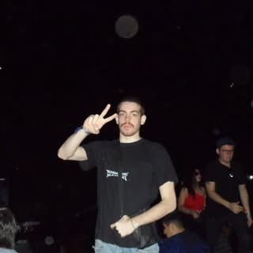

✷ arte hecho a mano — Asunción, Paraguay ✷
EXPERIMENTO
Prendas pintadas a mano · bordados · cuadros · arcilla
por Lorenzo Carrillo
Obrascada pieza es única

Sobre mí
Lorenzo Carrillo — artista y estudiante de arquitectura de Asunción, Paraguay. EXPERIMENTO es su laboratorio: caras imposibles dibujadas en tinta, remeras y camisas pintadas a mano, bordados puntada por puntada, cuadros y soles de arcilla.
Nada se imprime, nada se repite: cada prenda y cada objeto sale de sus manos, pieza por pieza, y se vende en ferias locales o directo por Instagram.
— la arquitectura me enseñó a mirar; el dibujo, a desobedecer.
Viajes & arquitecturalo que alimenta el ojo
De Gaudí a Le Corbusier, de las salinas del altiplano a Niterói — el cuaderno visual detrás de las obras.
Historiasdel taller y las ferias
Momentos guardados: ferias, prendas puestas, bordados en proceso, dibujos y cuadros.
¿Querés una pieza?
se aceptan encargos — remeras, bordados, cuadros
Escribime por Instagram ✷